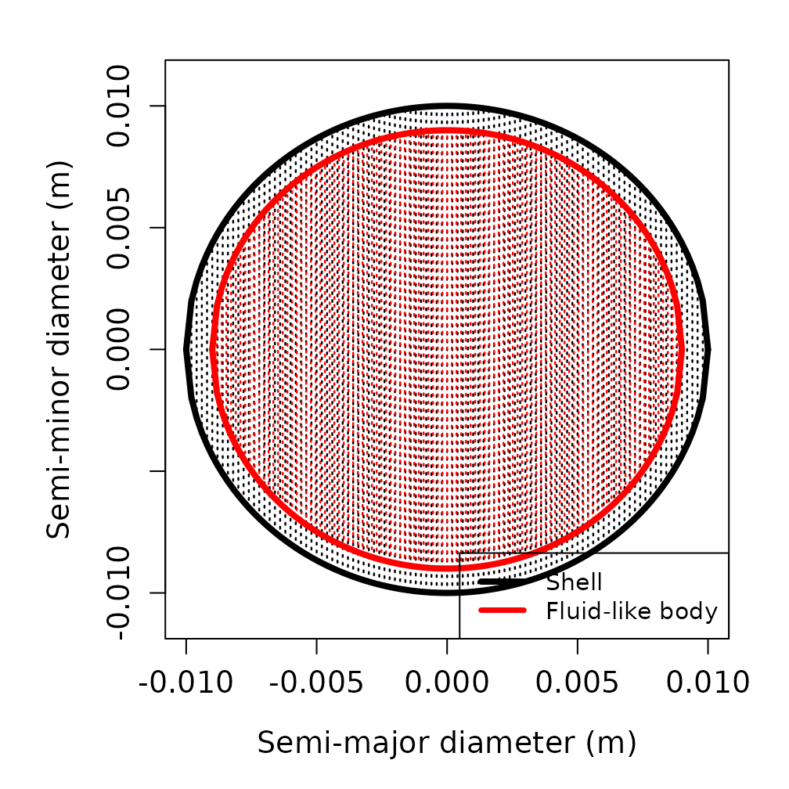
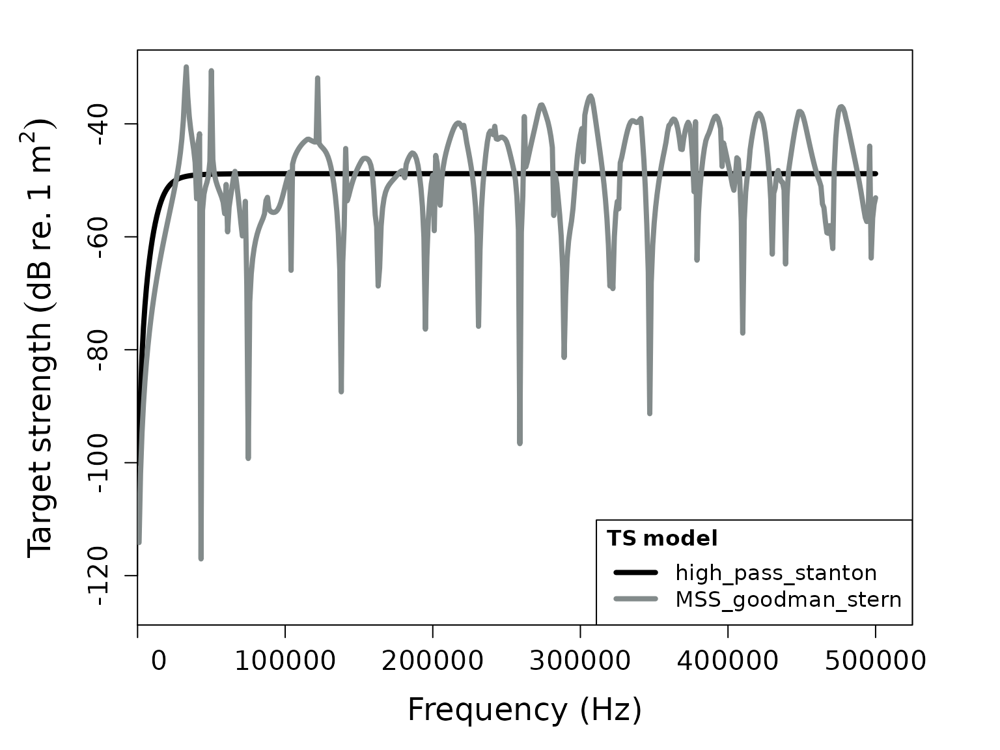

Target strength for elastic shelled spheres
Brandyn Lucca (https://orcid.org/0000-0003-3145-2969)
Source:vignettes/elastic_shelled_sphere_target_strength_vignette.Rmd
elastic_shelled_sphere_target_strength_vignette.RmdIntroduction
Elastic shelled spheres are important scatterers in marine acoustics, representing various zooplankton species and other organisms with hard exoskeletons or shells. These scatterers consist of an outer elastic shell surrounding an inner fluid medium. The target strength (TS, dB re. 1 m2) of such scatterers can be modeled using either exact modal series solutions1 or high-frequency approximations2.
acousticTS implementation
The acousticTS package provides two main approaches for
modeling elastic shelled spheres: the exact modal series solution from
Goodman and Stern (1962) and the high-frequency ray-based approximation
from Stanton (1989). The object-based approach in
acousticTS makes implementing these models straightforward
by handling the complex mathematical calculations internally.
Elastic shelled sphere object generation
First, an elastic shelled sphere object must be created using the
ESS (Elastic Shelled Scatterer) object class. This contains
slots for metadata, model_parameters,
model results, shell properties,
fluid properties, and shape_parameters. The
object can be created using the ess_generate(...)
function.
Required parameters
The ess_generate(...) function requires several key
parameters:
-
radius_shell: Outer radius of the shell (m) -
shell_thickness: Thickness of the shell (m) [optional, can be calculated from inner/outer radii] - Shell material properties: density, sound speed, and elastic constants
- Fluid material properties: density and sound speed
Material properties for the shell
The shell requires specification of: - density_shell or
g_shell: Shell density (kg/m³) or density contrast -
sound_speed_shell or h_shell: Shell sound
speed (m/s) or sound speed contrast - Elastic constants: K
(bulk modulus), nu (Poisson’s ratio), G (shear
modulus), or E (Young’s modulus)
Material properties for the internal fluid
The internal fluid requires: - density_fluid or
g_fluid: Fluid density (kg/m³) or density contrast -
sound_speed_fluid or h_fluid: Fluid sound
speed (m/s) or sound speed contrast
Basic example
# Call in package library
library(acousticTS)##
## Attaching package: 'acousticTS'## The following object is masked from 'package:base':
##
## kappa
# Create elastic shelled sphere object
shelled_sphere <- ess_generate(
shape = "sphere",
radius_shell = 10e-3, # 10 mm outer radius
shell_thickness = 1e-3, # 1 mm shell thickness
sound_speed_shell = 3750, # Shell sound speed (m/s)
sound_speed_fluid = 1575, # Internal fluid sound speed (m/s)
density_shell = 2565, # Shell density (kg/m³)
density_fluid = 1077.3, # Internal fluid density (kg/m³)
K = 70e9, # Bulk modulus (Pa)
nu = 0.32 # Poisson's ratio
)
# Display the object
shelled_sphere## ESS-object
## Elastic-shelled scatterer
## ID: UID
## Material:
## Shell:
## Density: 2565 kg m^-3
## Sound speed: 3750 m s^-1
## Poisson's ratio: 0.32
## Bulk modulus (K): 7e+10 Pa
## Young's modulus (E): 7.56e+10 Pa
## Shear modulus (G): 28636363636.3636 Pa
## Internal fluid-like body:
## Density: 1077.3 kg m^-3
## Sound speed: 1575 m s^-1
## Shape:
## Shell:
## Radius: 0.01 m
## Diameter: 0.02 m
## Outer thickness: 0.001 m
## Internal fluid-like body:
## Radius: 0.009 m
## Diameter: 0.018 m
## Propagation direction of the incident sound wave: 1.571 radiansCalculating a TS-frequency spectrum for the elastic shelled sphere
With the elastic shelled sphere object generated, TS can be
calculated using the target_strength(...) function. This
function supports multiple models for elastic shelled spheres:
-
"MSS_goodman_stern": Exact modal series solution3 -
"high_pass_stanton": High-frequency ray-based approximation4
Single model calculation
# Define frequency vector
frequency <- seq(1e3, 500e3, 1e3) # 1 kHz to 500 kHz
# Calculate TS using the modal series solution
shelled_sphere <- target_strength(
object = shelled_sphere,
frequency = frequency,
model = "MSS_goodman_stern"
)Multiple model comparison
# Calculate TS using both available models
shelled_sphere <- target_strength(
object = shelled_sphere,
frequency = frequency,
model = c("MSS_goodman_stern", "high_pass_stanton")
)Visualizing results
Shape visualization
The shape of the elastic shelled sphere can be visualized using:
# Plot the shape
plot(shelled_sphere, type = "shape")
Model results visualization
Model results can be plotted to compare the two approaches:
# Plot TS as a function of frequency
plot(shelled_sphere, type = "model")
Extracting model results
Model results can be extracted using the extract(...)
function for further analysis:
# Extract modal series solution results
mss_results <- extract(shelled_sphere, "model")$MSS_goodman_stern
head(mss_results)## frequency ka_shell ka_fluid f_bs sigma_bs TS
## 1 1000 0.0418879 0.03769911 0-1.962401e-06i 3.851016e-12 -114.14425
## 2 2000 0.0837758 0.07539822 0-8.001423e-06i 6.402277e-11 -101.93666
## 3 3000 0.1256637 0.11309734 0-1.834149e-05i 3.364103e-10 -94.73131
## 4 4000 0.1675516 0.15079645 0-3.320975e-05i 1.102888e-09 -89.57469
## 5 5000 0.2094395 0.18849556 0-5.284724e-05i 2.792830e-09 -85.53955
## 6 6000 0.2513274 0.22619467 0-7.752180e-05i 6.009630e-09 -82.21152
# Extract high-pass approximation results
hp_results <- extract(shelled_sphere, "model")$high_pass_stanton
head(hp_results)## frequency k1a k_s f_bs sigma_bs TS
## 1 1000 0.0418879 10.47198 9.723528e-11 9.723528e-11 -100.12176
## 2 2000 0.0837758 20.94395 1.555591e-09 1.555591e-09 -88.08104
## 3 3000 0.1256637 31.41593 7.871387e-09 7.871387e-09 -81.03949
## 4 4000 0.1675516 41.88790 2.484524e-08 2.484524e-08 -76.04757
## 5 5000 0.2094395 52.35988 6.049207e-08 6.049207e-08 -72.18302
## 6 6000 0.2513274 62.83185 1.248180e-07 1.248180e-07 -69.03723The modal series solution returns a data.frame with
columns: - frequency: transmit frequency (Hz) -
k_sw: acoustic wavenumber for seawater/ambient fluid -
k_shell_l: longitudinal acoustic wavenumber of shell -
k_shell_t: transversal acoustic wavenumber of shell -
f_bs: the complex form function output -
sigma_bs: the acoustic cross-section (m²) -
TS: the target strength (dB re. 1 m²)
Parameter sensitivity analysis
This implementation allows for exploration of how different material properties and geometric parameters affect the target strength.
Effect of shell thickness
# Create spheres with different shell thicknesses
sphere_thin <- ess_generate(
radius_shell = 10e-3, shell_thickness = 0.5e-3,
sound_speed_shell = 3750, sound_speed_fluid = 1575,
density_shell = 2565, density_fluid = 1077.3,
K = 70e9, nu = 0.32
)
sphere_medium <- ess_generate(
radius_shell = 10e-3, shell_thickness = 1.0e-3,
sound_speed_shell = 3750, sound_speed_fluid = 1575,
density_shell = 2565, density_fluid = 1077.3,
K = 70e9, nu = 0.32
)
sphere_thick <- ess_generate(
radius_shell = 10e-3, shell_thickness = 2.0e-3,
sound_speed_shell = 3750, sound_speed_fluid = 1575,
density_shell = 2565, density_fluid = 1077.3,
K = 70e9, nu = 0.32
)
# Calculate TS for each sphere
sphere_thin <- target_strength(sphere_thin, frequency, "MSS_goodman_stern")
sphere_medium <- target_strength(sphere_medium, frequency, "MSS_goodman_stern")
sphere_thick <- target_strength(sphere_thick, frequency, "MSS_goodman_stern")
# Extract results
ts_thin <- extract(sphere_thin, "model")$MSS_goodman_stern
ts_medium <- extract(sphere_medium, "model")$MSS_goodman_stern
ts_thick <- extract(sphere_thick, "model")$MSS_goodman_stern
# Plot comparison
par(oma = c(0, 0.25, 0, 0), mar = c(5, 6, 4, 2))
plot(
x = ts_thin$frequency * 1e-3,
y = ts_thin$TS,
type = "l",
lty = 1,
lwd = 2.5,
xlab = "Frequency (kHz)",
ylab = expression(Target ~ strength ~ (dB ~ re. ~ 1 ~ m^2)),
cex.lab = 1.3,
cex.axis = 1.2
)
lines(
x = ts_medium$frequency * 1e-3,
y = ts_medium$TS,
col = "red",
lty = 1,
lwd = 2.5
)
lines(
x = ts_thick$frequency * 1e-3,
y = ts_thick$TS,
col = "blue",
lty = 1,
lwd = 2.5
)
legend("bottomright",
c("0.5 mm shell", "1.0 mm shell", "2.0 mm shell"),
lty = c(1, 1, 1),
lwd = c(2.5, 2.5, 2.5),
col = c("black", "red", "blue"),
cex = 1.0
)Effect of material properties
# Create spheres with different shell densities
sphere_light <- ess_generate(
radius_shell = 10e-3, shell_thickness = 1e-3,
sound_speed_shell = 3750, sound_speed_fluid = 1575,
density_shell = 1500, density_fluid = 1077.3, # Lighter shell
K = 70e9, nu = 0.32
)
sphere_heavy <- ess_generate(
radius_shell = 10e-3, shell_thickness = 1e-3,
sound_speed_shell = 3750, sound_speed_fluid = 1575,
density_shell = 4000, density_fluid = 1077.3, # Heavier shell
K = 70e9, nu = 0.32
)
# Calculate TS
sphere_light <- target_strength(sphere_light, frequency, "MSS_goodman_stern")
sphere_heavy <- target_strength(sphere_heavy, frequency, "MSS_goodman_stern")
# Extract results
ts_light <- extract(sphere_light, "model")$MSS_goodman_stern
ts_heavy <- extract(sphere_heavy, "model")$MSS_goodman_stern
# Plot comparison
par(oma = c(0, 0.25, 0, 0), mar = c(5, 6, 4, 2))
plot(
x = ts_medium$frequency * 1e-3,
y = ts_medium$TS,
type = "l",
lty = 1,
lwd = 2.5,
xlab = "Frequency (kHz)",
ylab = expression(Target ~ strength ~ (dB ~ re. ~ 1 ~ m^2)),
cex.lab = 1.3,
cex.axis = 1.2
)
lines(
x = ts_light$frequency * 1e-3,
y = ts_light$TS,
col = "red",
lty = 1,
lwd = 2.5
)
lines(
x = ts_heavy$frequency * 1e-3,
y = ts_heavy$TS,
col = "blue",
lty = 1,
lwd = 2.5
)
legend("bottomright",
c(
"Medium density (2565 kg/m³)",
"Light shell (1500 kg/m³)",
"Heavy shell (4000 kg/m³)"
),
lty = c(1, 1, 1),
lwd = c(2.5, 2.5, 2.5),
col = c("black", "red", "blue"),
cex = 0.9
)Model validity and applications
Modal series vs. high-pass approximation
The modal series solution ("MSS_goodman_stern") provides
an exact solution valid across all frequencies, while the high-pass
approximation ("high_pass_stanton") is designed for
high-frequency applications where the wavelength is much smaller than
the scatterer size.
Biological applications
Elastic shelled spheres can represent various marine organisms:
- Pteropods: Pelagic gastropods with calcium carbonate and/or aragonite shells
- Molluscs: Benthic organisms with elastic shells
- Coccolithophores: Phytoplankton with calcite plates
The models implemented here provide the theoretical foundation for understanding acoustic backscatter from these important marine organisms.